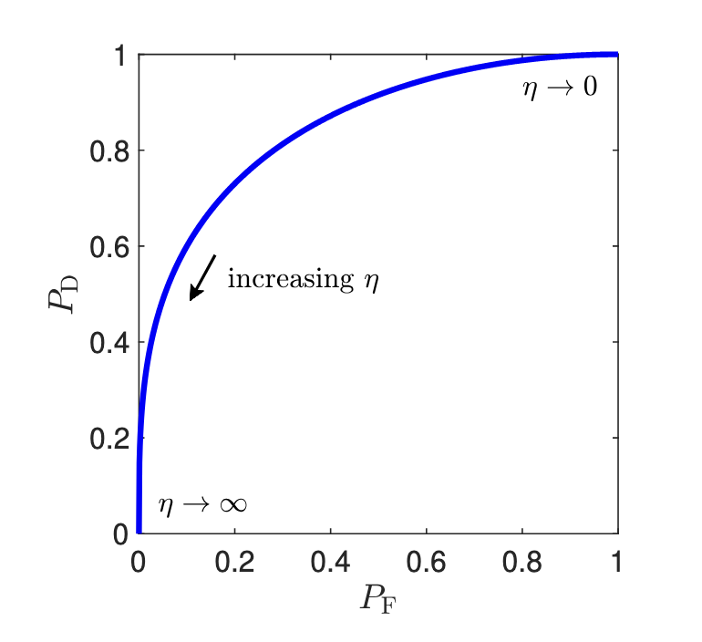
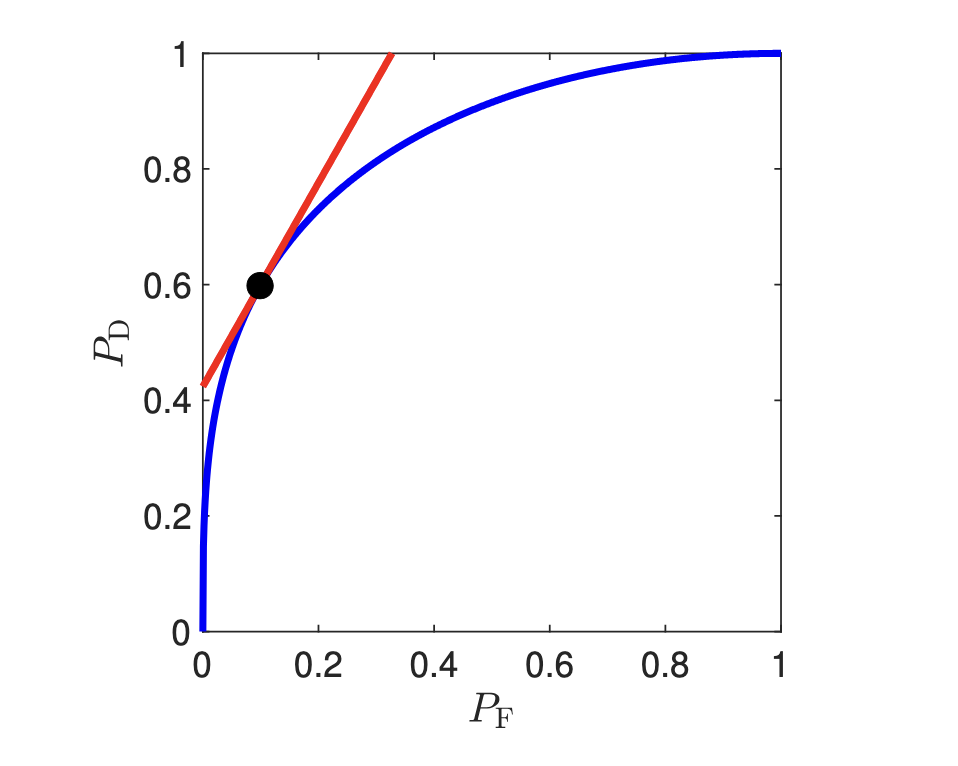

NonBayesian Hypothesis Testing
Previously, we looked at a Baeysian approach where we had a a priori probability distribution and cost criterion to determine η
- We computed the likelihood ratio py∣H(y∣H0)py∣H(y∣H1)
- However, it is not quite clear how to choose this
- The threshold η can be quite sensitive to these choices
- We'll go over another way to decide between hypotheses
Classification Performance Measures
The performance of any decision rule can be fully specified by two quantities:
PFPD=P(H^=H1∣H=H0)=P(H^=H1∣H=H1)
- PF is th false-alarm probability
- PD is the detection probability
These have other names in other disciplines
- Statistics: PF is the size and PD is the power
- Type I error: PF
- Type II error: 1−PD
- Machine learning: PD is the recall / sensitivity
- Use PP=P(H=H1∣H^=H1) as the precision / positive predictive value (PPV)
- This does depend on the choice of priors, but given a fixed set of these priors, it is a function of PF
Operating Characteristic of the Likelihood Ratio Test
In general, a good decision rule has a large PD and a small PF
- However, these are competing objectives
- If we use a likelihood ratio test, then each choice of η uniquely determines a decision rule with some (PF(η),PD(η))
- We can trace this point as η varies in [0,∞) to get the OC-LRT, also known as the ROC (receiver operating characteristic)

In general, we have that:
- As η→0, we approach (1,1)
- As η→∞, we approach (0,0)
Bayesian Operating Point
The Bayesian test corresponds to a specific η, which means it is a point on the curve
To get this, we note the Bayes risk is of the form:
ϕ(H^)=i,j∑CijP(H^=Hi∣H=Hj)Pj
This corresponds to:
ϕ(H^)ϕ(H^)=αPF−βPD+γ=(C10−C00)P0⋅PF−(C01−C11)P1⋅PD+C00P0+C01P1
For any constant c, setting ϕ(f)=c yields a line:
PD=βαPF+γ−c
In this case, βα is equal to the threshold ηB in the Bayesian test
- Therefore, the Bayesian test is finding the smallest c that leads to an intersection of the line with slope ηB and the OC-LRT
- Since the y-intercept contains a −c, this means that smaller c raise the line upwards
- This means we are looking for the highest line with slope ηB that still intersects the OC-LRT

Monotonically Nondecreasing
The OC-LRT is monotonically nondecreasing
- This can be proven by considering that if you increase η such that PF changes, then PD and PF cannot increase by looking at the definitions
Neyman-Pearson Hypothesis Testing
When we are unable / it is difficult to choose costs for a decision problem, one popular alternative is:
- Choose a decision rule that maximizes PD
- Subject to PF≤α for some α of choice
Neyman-Pearson Lemma
Suppose the likelihood ratio L(y) is a purely continuous random variable under each hypothesis. Then a solution to the above among the deterministic estimates is an LRT test with η chosen such that:
PF=α
What this implies is we can just look at the OC-LRT and draw the line PF alpha to find the PD value
This theorem is quite restricting in that it:
- Requires the likelihood ratio is continuous, which is not true if either hypothesis uses a discrete distribution or if there is a strange interaction
- Only looks at deterministic decision rules
Proof Sketch:
- We look at any test with PD,PF as well as a specific test under a LRT with threshold η with PDη,PFη
- We can do some algebra to find that:
PDη−PD≥PFη−PF
- As a result, if η is chosen such that PF≤PFη, then PDη≥PD
- If η is chosen such that PFη=α, then any other test with PF≤α will have PD≤PDη, and therefore is not better
P-Value
The LRT rule L(y)≥η can have a monotonic g(⋅) applied to both sides:
g(L(y))≥g(η)
We can do this with PF, which gives:
PF(L(y))≤PF(η)
- We take p∗(y)=PF(L(y)) and PF(η)=α
- This is known as the p-value and the significance level of the test